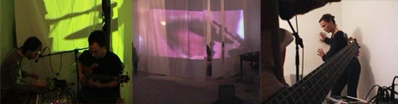

2010. EN BUSCA DEL PASTO. Todos los contenidos de esta web están bajo licencia "by-sa 3.0" de
EBDP trabaja también los contextos donde la música vive cada vez. En principio, el contexto es el propio espacio en el que la improvisación musical está teniendo lugar; EBDP también trabaja, pues, en la construcción o elección de esos espacios.
El motivo fundamental es aportar al proyecto caracteres extra-musicales, al tiempo que se pretenden resaltar y poner a prueba diferentes conceptos que circundan el acto de improvisar. El modo más convencional de hacerlo es mediante la proyección de vídeos sobre el escenario. La mayoría de vídeos son realizados por EBDP, aunque también se han hecho actuaciones sobre películas, fotografías, pinturas o dibujos de autores escogidos (a los que se pretende recoger u homenajear). En general, los videos ofrecen un marco de significaciones o temas en el que se ubica el inestable acontecer de la música. En otras ocasiones se trabaja acondicionando el propio escenario o, en general, la sala o espacio donde se realizará la improvisación. Ha sido frecuente sacar el escenario a lugares poco frecuentes (la calle, un descampado, el campo, la sala de un museo, etc.). Se ha trabajado en "instalaciones sonoras", disponiendo o dispersando el "escenario" y los "músicos" en una sala de museo, como una pieza que perdura en marcha durante un tiempo indefinido.
También se han realizado ensayos a través de Internet: las herramientas de video conferencia permiten realizar un concierto en tres lugares simultáneamente (aprovechando la circunstancia de que uno de los integrantes de EBDP vive en Berlín, otro en París, otro en Valencia y el resto en Madrid), proyectando sobre cada escenario la imagen de los “ausentes” (es importante destacar que los envíos de señal sufren retardos que llenan de accidentes la ya accidentada improvisación). En general, se pretenden plantear nuevas condiciones físico-espaciales en las que desarrollar la actuación y, por tanto, también la expectación, medios peculiares de comunicación entre los músicos y entre éstos y los espectadores, se cuestionan algunas ideas en torno a la presencia y permanencia de la obra, la relación entre público-obra-lugar, la simultaneidad, ajustes y desajustes con el entorno, cuestionamiento de los protocolos sociales ligados a la producción, exposición y contemplación de obras, etc.